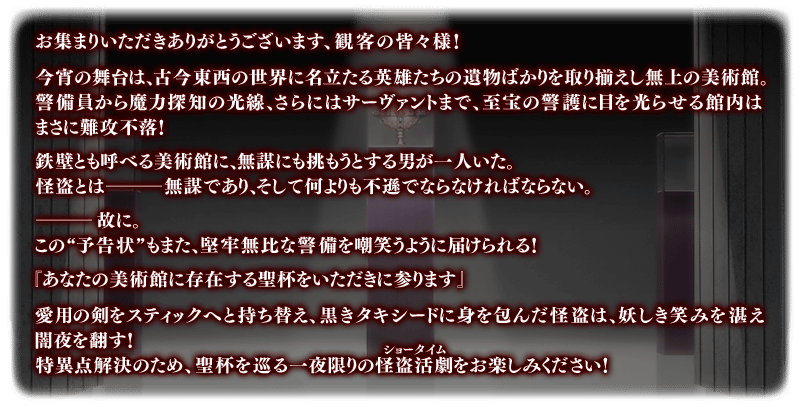
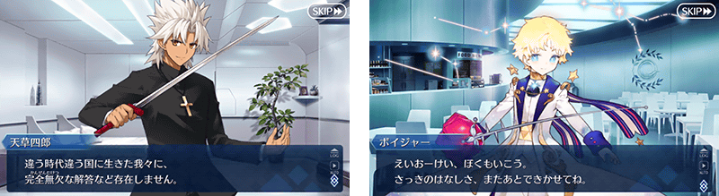
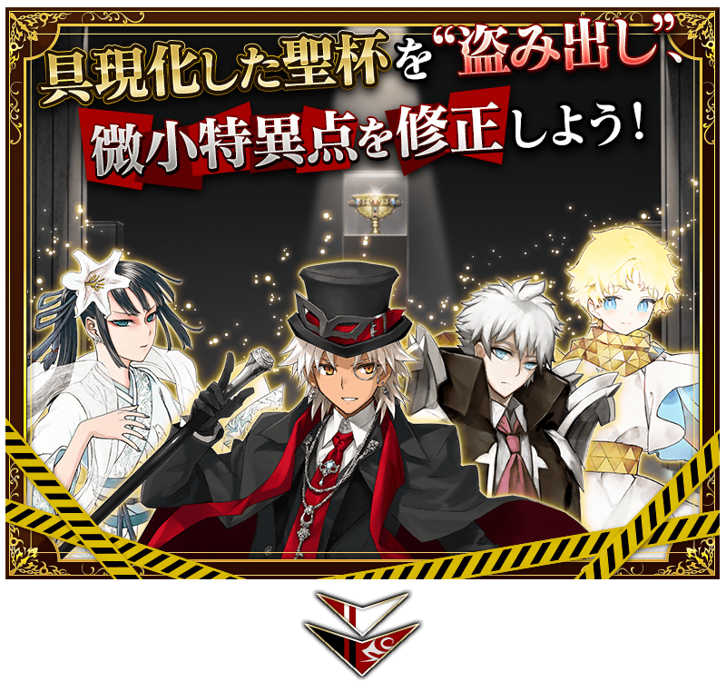
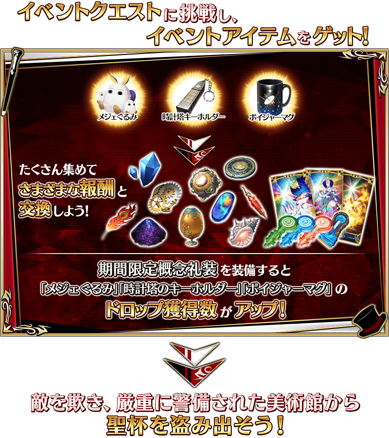
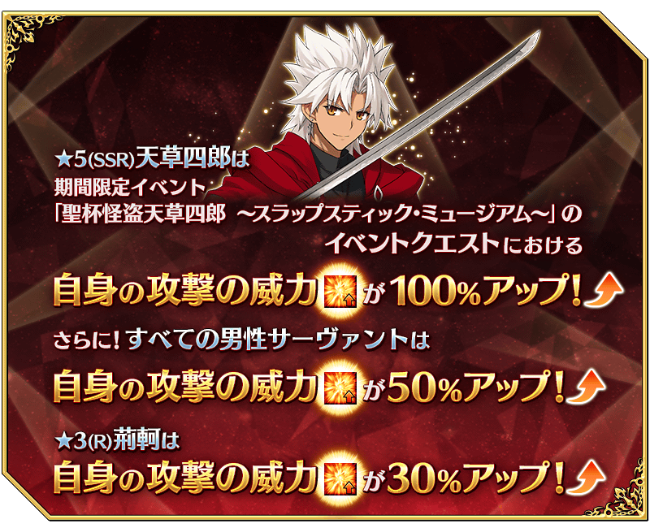
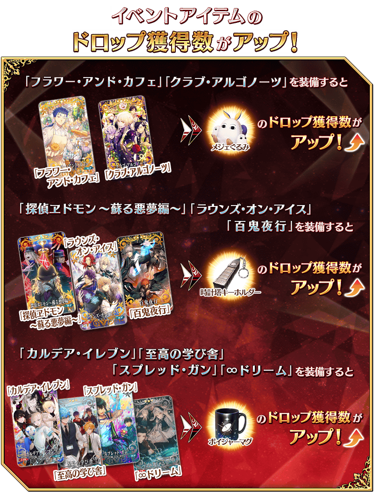
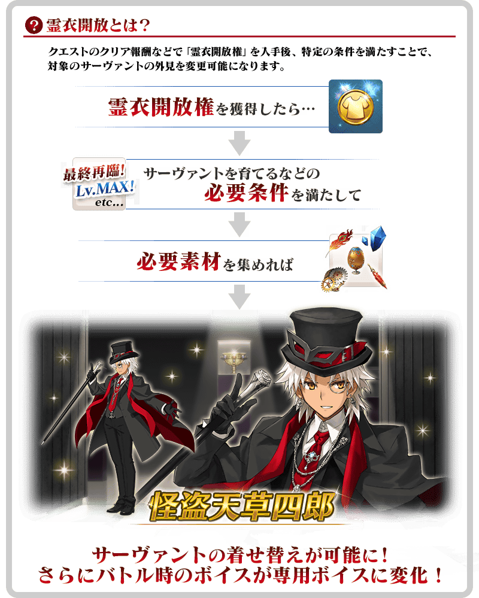
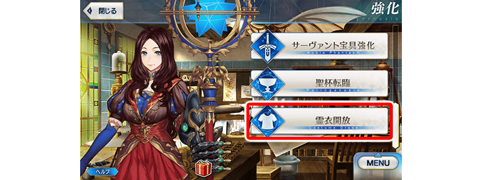
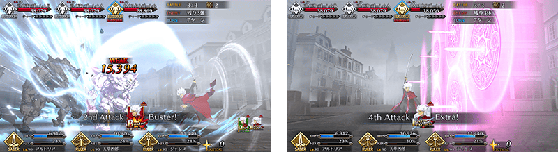

舉辦期間限定活動「聖杯怪盗天草四郎 ～鬧劇博物館～」！
展示具現化聖杯的美術館。突破難以攻陷的警備，偷出安置在館內最深處的聖杯，怪盗劇就此開幕！
本活動中，活動關卡會在管理室(ターミナル)出現！
除了享受故事的主線關卡逐日開放以外，在通過第一節後會開放收集活動道具的自由關卡。
攻略活動關卡，觀看故事的結尾吧！
※本頁面皆為開發中圖片。會有與實際圖片相異的情況。 ※一部份的關卡為日後開放。
◆活動舉辦期間◆
2021年3月3日(三) 17:00～3月15日(一) 11:59
◆活動參加條件◆
滿足以下條件的御主才能參加
・通過「特異點F 炎上汙染都市 冬木」

 
享受故事的主線關卡會逐日開放。
通過主線關卡第一節的話會開放收集活動道具的自由關卡。
之後的自由關卡是藉由通過主線關卡來開放。
【關卡的舉辦期間】
| 關卡的種類 | 舉辦期間 |
|---|---|
|
序幕(プロローグ) 主線關卡第一節 自由關卡 |
2021年3月3日(三) 17:00～ 3月15日(一) 11:59 |
|
主線關卡第二節 自由關卡 |
2021年3月4日(四) 17:00～ 3月15日(一) 11:59 |
|
主線關卡第三節 自由關卡 |
2021年3月5日(五) 17:00～ 3月15日(一) 11:59 |
|
主線關卡第四節 自由關卡 |
2021年3月6日(六) 17:00～ 3月15日(一) 11:59 |
|
主線關卡第五節 自由關卡 |
2021年3月7日(日) 17:00～ 3月15日(一) 11:59 |
|
主線關卡第六節 自由關卡 |
2021年3月8日(一) 17:00～ 3月15日(一) 11:59 |
|
主線關卡最終節 自由關卡 |
2021年3月9日(二) 17:00～ 3月15日(一) 11:59 |
【3月9日(二) 17:00追記】
以通過期間限定活動「聖杯怪盗天草四郎 ～鬧劇博物館～」主線關卡最終節及「終局特異點」的御主做為對象，開放高難易度的「挑戰關卡」。
「挑戰關卡」就算通過後也不會消失，可以變更從者和概念禮裝的組合等後無限次挑戰。 ※關卡通過報酬、戰利品、御主EXP、魔術禮裝EXP、絆點數只可在初次通過時獲得。
◆挑戰關卡開放時間◆
2021年3月9日(二) 17:00～
◆挑戰關卡參加條件◆
滿足以下條件的御主才能參加
・通過期間限定活動「聖杯怪盗天草四郎 ～鬧劇・博物館～」的主線關卡最終節
・通過「終局特異點」
◆挑戰關卡初次通過報酬◆
傳承結晶 1個
期間限定「迦勒底男性精選2021Pick Up召喚(每日交替)」的Pick Up對象從者，會做為期間限定活動「聖杯怪盗天草四郎 ～鬧劇博物館～」自由關卡的支援從者以每日交替登場！
藉此機會享受在意從者的戰鬥動作和語音吧！
◆舉辦期間◆
2021年3月3日(三) 17:00～3月15日(一) 11:59
【對象從者】
| 職階 | 稀有度 | 從者名 |
|---|---|---|
| Saber | ★★★★★ | 狄奧斯庫洛伊 |
| Archer | 阿周那 | |
| 拿破崙 | ||
| 尼古拉・特斯拉 | ||
| Lancer | 恩奇杜 | |
| 迦爾納 | ||
| Rider | 阿基里斯 | |
| 奧茲曼迪亞斯 | ||
| 奧德修斯 | ||
| 尼莫 | ||
| Caster | 諸葛孔明〔艾梅洛Ⅱ世〕 | |
| Assassin | 李書文 | |
| Berserker | 弗拉德三世 | |
| 庫・夫林〔Alter〕 | ||
| 項羽 | ||
| Ruler | 天草四郎 |
※3月10日(三) 17:00修正
【每日交替時間表】
| 每日交替支援從者 | 登場期間 |
|---|---|
| ★5(SSR)天草四郎 |
2021年3月3日(三) 17:00～ 3月5日(五) 22:59 |
|
★5(SSR)狄奧斯庫洛伊 ★5(SSR)項羽 |
2021年3月5日(五) 23:00～3月6日(六) 22:59 |
|
★5(SSR)拿破崙 ★5(SSR)奧德修斯 |
2021年3月6日(六) 23:00～3月7日(日) 22:59 |
|
★5(SSR)諸葛孔明〔艾梅洛Ⅱ世〕 ★5(SSR)弗拉德三世(Berserker) |
2021年3月7日(日) 23:00～3月8日(一) 22:59 |
|
★5(SSR)阿周那 ★5(SSR)尼莫 |
2021年3月8日(一) 23:00～3月9日(二) 22:59 |
|
★5(SSR)迦爾納(Lancer) ★5(SSR)奧茲曼迪亞斯 |
2021年3月9日(二) 23:00～3月10日(三) 22:59 |
|
★5(SSR)尼古拉・特斯拉 ★5(SSR)恩奇杜 |
2021年3月10日(三) 23:00～3月11日(四) 22:59 |
|
★5(SSR)阿基里斯 ★5(SSR)庫・夫林〔Alter〕 |
2021年3月11日(四) 23:00～3月12日(五) 22:59 |
|
★5(SSR)李書文(Assassin) ★5(SSR)Voyager |
2021年3月12日(五) 23:00～3月13日(六) 22:59 |
|
★5(SSR)天草四郎 ★5(SSR)Voyager |
2021年3月13日(六) 23:00～ 3月15日(一) 11:59 |
※3月10日(三) 17:00修正
超值攻略方法・其1
本活動的期間中，「★5(SSR)天草四郎」在活動關卡中會得到自身的攻擊威力提升100%！
並且，「★5(SSR)天草四郎」以外的所有男性從者在活動關卡中會各自得到自身的攻擊威力提升50%、「★3(R)荊軻」自身的攻擊威力提升30%的加成！

◆有關從者的注意◆
※性別「男性」的從者之外，下述的從者也包含在活動加成的對象。
・★5(SSR)阿斯托爾福(Saber)
・★5(SSR)狄奧斯庫洛伊
・★5(SSR)俄里翁
・★5(SSR)恩奇杜
・★5(SSR)羅慕路斯＝奎里努斯
・★5(SSR)伽摩
・★5(SSR)始皇帝
・★5(SSR)平景清
・★5(SSR)魔王信長(織田信長)
・★5(SSR)蘆屋道滿
・★4(SR)夏爾・德翁
・★4(SR)凱涅厄斯
・★4(SR)阿斯托爾福(Rider)
・★4(SR)鬼一法眼
・★3(R)荊軻
※自2月28日(日) 17:30，在從者選擇畫面和從者強化畫面等，追加活動加成篩選器。
由於是只顯示於活動活躍從者的便利功能，敬請活用。
※「★5(SSR)魔王信長(織田信長)」是「★5(SSR)織田信長」靈基再臨到第3階段的話名稱會變成「★5(SSR)魔王信長。
超值攻略方法・其2
裝備期間限定概念禮裝讓活動道具的掉落獲得數提升！
裝備在聖晶石召喚Pick Up的期間限定概念禮裝「★5(SSR)フラワー・アンド・カフェ」「★5(SSR)クラブ・アルゴノーツ」「★4(SR)探偵ヱドモン～蘇る悪夢編～」「★4(SR)ラウンズ・オン・アイス」「★4(SR)百鬼夜行」「★3(R)カルデア・イレブン」「★3(R)至高の学び舎」「★3(R)スプレッド・ガン」「★3(R)∞ドリーム」的話，活動道具「梅傑玩偶」「時計塔鑰匙圈」「航海家馬克杯」各自的掉落獲得數會提升。
※請注意各關卡的道具掉落率並非100%。


活動道具可自點擊管理室(ターミナル)畫面右上「活動報酬」鍵所顯示的「活動道具交換」畫面，交換以下的道具。
※關於英靈結晶・流星之芙芙ALL★4(HP)、英靈結晶・日輪之芙芙ALL★4(ATK)的交換，進行在3月9日(二)開放的活動關卡後才能交換。 ※活動道具交換期間結束後「梅傑玩偶」「時計塔鑰匙圈」「航海家馬克杯」會消失。
◆交換期間◆
2021年3月3日(三) 17:00～3月22日(一) 11:59
◆能用梅傑玩偶交換的道具◆
|
【靈衣開放權】 【技能強化＆靈基再臨素材】 【靈基再臨素材】 【其他道具】 |
◆能用時計塔鑰匙圈交換的道具◆
|
【技能強化＆靈基再臨素材】 【靈基再臨素材】 【其他道具】 |
◆能用航海家馬克杯交換的道具◆
|
【技能強化＆靈基再臨素材】 【其他道具】 |
「★5(SSR)天草四郎」的靈衣開放權做為期間限定活動「聖杯怪盗天草四郎 ～鬧劇博物館～」的報酬登場！
可在本活動的活動道具交換入手上述靈衣開放權。
另外，想要靈衣開放的話，除了靈衣開放權外必須再加上一些開放條件。
◆有關靈衣開放權的注意◆
※「★5(SSR)天草四郎」的靈衣開放權只限期間限定活動「聖杯怪盗天草四郎 ～鬧劇博物館～」的活動道具交換期間才能入手。
※「★5(SSR)天草四郎」的靈衣會配合外觀變化一部份語音。
※請注意未持有「★5(SSR)天草四郎」的情況，可入手靈衣開放權。但無法進行靈衣開放。


「靈衣開放」是自強化畫面進行。
※「靈衣開放」後會自動切換戰鬥角色和圖示。若想回到「靈衣開放」前的狀態和變成其他再臨階段的情況，可自從者詳細畫面變更。 ※進行「靈衣開放」不會讓職階和能力等有所變化。
介紹開放靈衣「怪盗天草四郎」的「★5(SSR)天草四郎」寶具演出！
在「Fate/Grand Order」官方網站內的公告中，以影片公開寶具演出，敬請確認。
「★5(SSR)天草四郎」的戰鬥動作及寶具演出翻新！
另外，伴隨對一部份裝置全螢幕顯示的對應，寶具演出也對應到全螢幕顯示。
在「Fate/Grand Order」官方網站內的公告中，以影片公開寶具演出，敬請確認。
◆翻新實施時間◆
2021年3月3日(三) 17:00～

強化「★5(SSR)李奧納多・達文西(Caster)」「★5(SSR)天草四郎」「★3(R)荊軻」的特別關卡「從者強化關卡」，在迦勒底之門永久追加。
不僅進行對象從者的強化，也可獲得聖晶石做為關卡通過報酬。
※請注意在從者強化關卡沒有文字冒險部份。
◆追加時間◆
2021年3月3日(三) 17:00～
◆開放條件◆
持有的強化對象從者，必須使其最終再臨。
※未持有對象從者的話，不會出現關卡。
※關卡沒有舉辦期限。

【3月10日(三) 17:00追記】
其他還有，
・迦勒底男性精選2021
・迦勒底男性精選2021Pick Up召喚(每日交替)
・迦勒底男性精選2021Pick Up3召喚
以期間限定舉辦中！
關於詳情，請自下述橫幅確認。
■「迦勒底男性精選2021」詳細情報